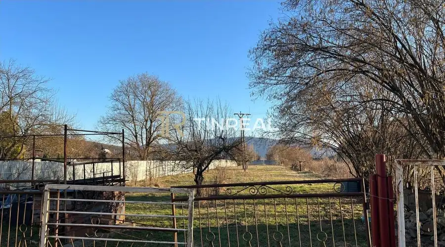
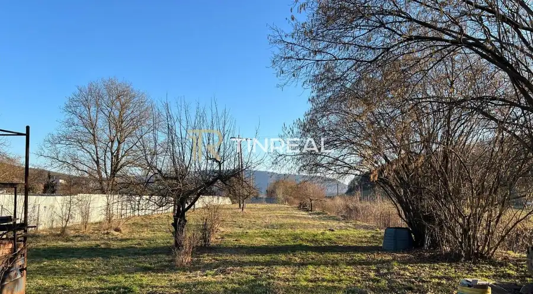
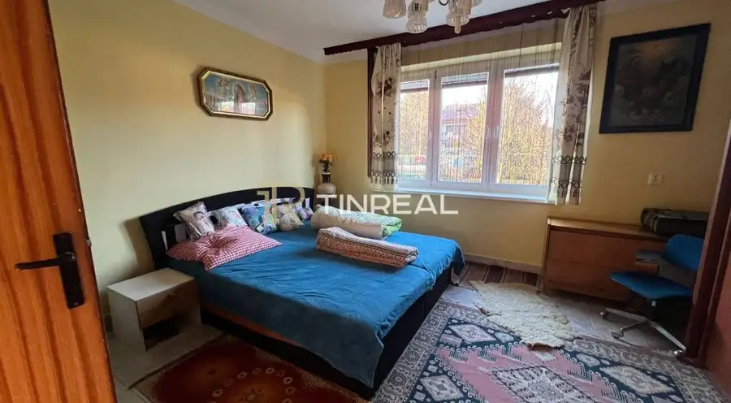
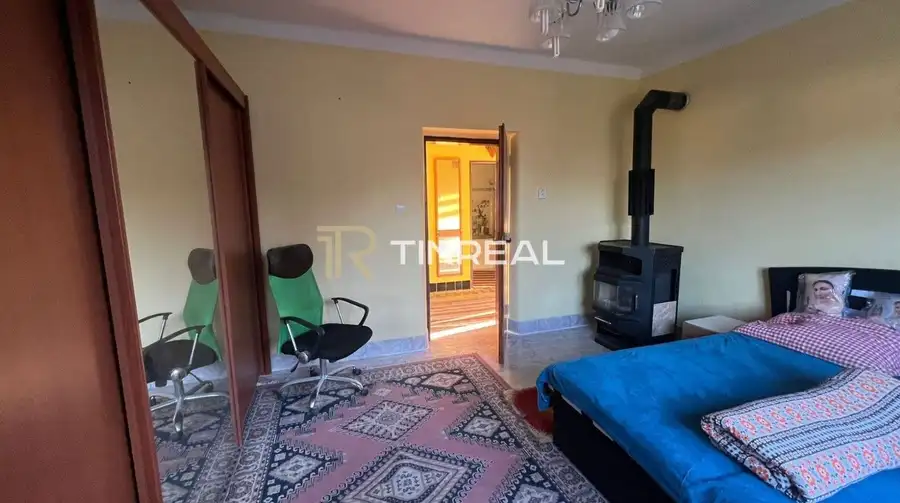
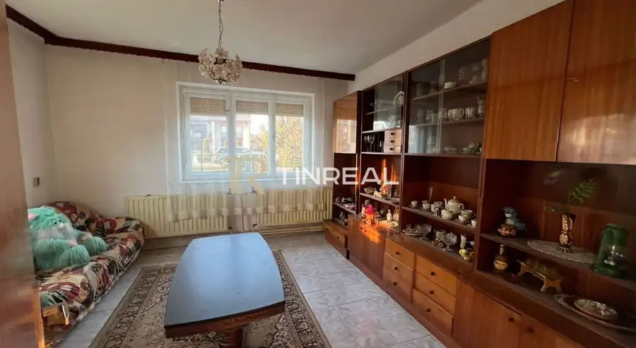
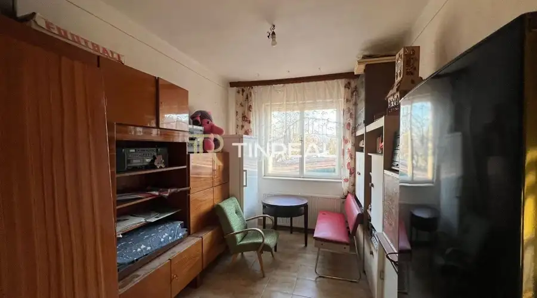

NA PREDAJ – Rodinný dom s veľkým pozemkom – Myslina
Myslina






- Plocha96 m²
- StavPôvodný stav
O nehnuteľnosti
Rodinný dom s veľkým pozemkom v obci Myslina – ideálne miesto pre nový domov alebo víkendový oddychPonúkame na predaj rodinný dom v pokojnej obci Myslina, vzdialenej len 4 km od mesta Humenné. Nehnuteľnosť je v pôvodnom stave, rekonštrukciou prešla len kúpeľňa, tak ponúka skvelú príležitosť upraviť si bývanie presne podľa vlastného štýlu a potrieb. Celková plocha domu je 120 m². Úžitková plocha domu je 96 m².Dom je napojený na všetky inžinierske siete (plyn, voda, kanalizácia, elektrina). Vykurovanie je zabezpečené kotlom na pevné palivo (drevo).Dispozícia domu:vstupná chodbafunkčná kuchyňakomorakúpeľnasamostatné WC3 nepriechodné izbySúčasťou domu je pivnica a garáž, ktoré poskytujú praktický úložný priestor aj zázemie pre domácnosť.Veľkým benefitom je rozľahlý pozemok s celkovou výmerou 2545 m², ktorý ponúka široké možnosti využitia. Môžete tu vytvoriť priestrannú záhradu, venovať sa pestovaniu, vybudovať oddychovú zónu s altánkom či bazénom alebo realizovať ďalšie projekty podľa vašich plánov. Takýto veľký pozemok poskytuje dostatok priestoru na pokojný život aj rôzne aktivity.Dom je vhodný pre niekoho, kto vidí potenciál, má chuť postupne meniť a zveľaďovať priestor okolo seba. Osloví najmä ľudí, ktorí sa neboja rekonštrukcie a hľadajú pokojné miesto na bývanie alebo oddych mimo mesta.Tomuto domu stačí nový majiteľ, ktorý v ňom uvidí potenciál a vdýchne mu nový život.Zaujala vás táto ponuka?Kontaktujte nás a dohodnite si obhliadku ešte dnes.PhDr. Zuzana Kotlárová, PhD.zuzana.kotlarova@tinreal.sk+421 908 106 590Teším sa na vás.Naše služby:*kompletný právny servis*vyhotovenie všetkých zmlúv spojených s predajom*uhradenie katastrálneho poplatku*vklad kúpnych zmlúv na kataster*vyhotovenie preberacieho protokolu*odovzdanie nehnuteľnosti*odhlásenie/prihlásenie*vybavenie HÚ*klientom sme k dispozícii 7 dní v týždniTaktiež ponúkam v našej kancelárii nezáväznú konzultáciu o predaji/kúpe nehnuteľnostiBezplatná analýza trhovej ceny Vašej nehnuteľnostiPomôžem vám zorientovať sa v predaji bez skrytých poplatkovFinancovanie nehnuteľnosti hypotekárnym úverom ako aj poistenie nehnuteľností
Parametre
- Druh
- Rodinný dom
- Dátum zverejnenia
- 10. 04. 2026
- Energetický certifikát budovy
- nie je
- Plocha pozemku
- 2545 m²
- Počet izieb / miestností
- 3
- Počet nadzemných podlaží
- 1
- Rok výstavby
- 1980
- Stav nehnuteľnosti
- Pôvodný stav
- Terén pozemku
- Rovinatý
- Typ
- Predaj
- Typ konštrukcie
- Iná
- Zastavaná plocha
- 120 m²
- Úžitková plocha
- 96 m²